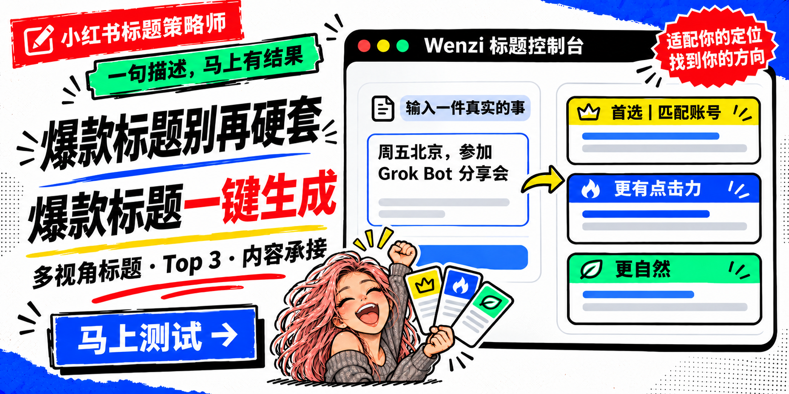

01
多视角标题
从人群、场景、价值、反差、好奇、个人经历和搜索入口中，选择真正适合当前内容的角度。
把一件真实发生的事说清楚，马上得到多视角标题、Top 3 和内容承接。标题负责让合适的人点进来，内容与账号定位负责把他们留下。

这是一个可点击的本地演示。修改事件或账号定位，然后生成一组即时结果，体验 Skill 的核心判断方式。
它先识别内容任务，再选择适配视角，最后用账号定位和正文兑现能力做筛选。
从人群、场景、价值、反差、好奇、个人经历和搜索入口中，选择真正适合当前内容的角度。
不是把十几个标题丢给你。它会明确给出首选、更有点击力和更自然的版本，以及选择理由。
告诉你正文至少要讲清什么，也会检查这篇内容是否仍然属于账号长期表达，而不是为了热点换一个人。
不需要先学标题公式，也不强迫只有一个事件的用户做完整账号访谈。
活动、经历、观点、产品、攻略或草稿都可以。
区分活动招募、活动复盘和日常分享，避免混写。
根据内容与账号定位选择 3–5 个真正适配的角度。
检查真实性、点击理由、正文兑现和账号连续性。
三个项目从不同入口开始，但共同把效率交给 AI，把选择和判断留给本人。
没有第三方依赖，不需要 API Key，也不会自动发布。复制到 Codex Skills 目录，开启新对话后直接描述一件事。